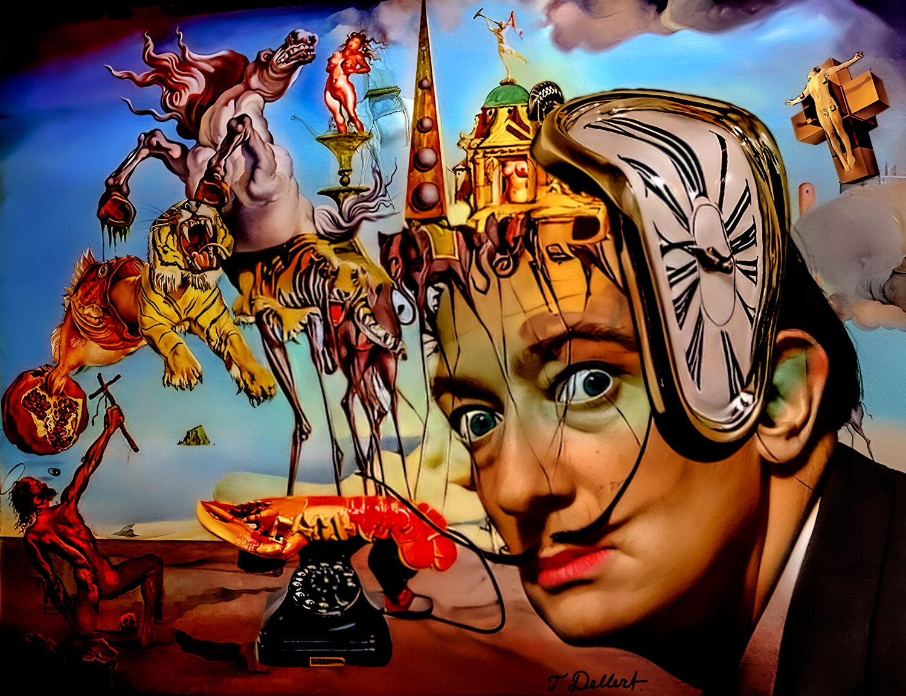
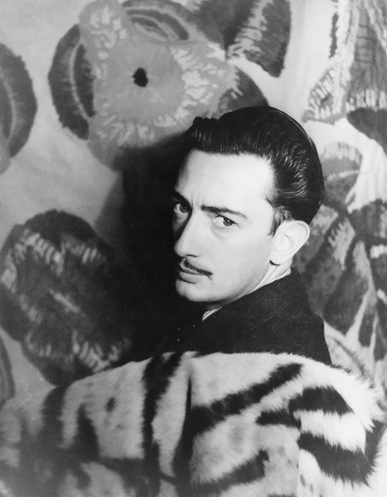
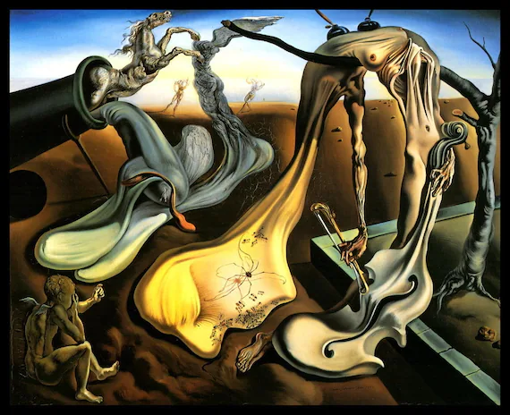

Art is a diverse range of human activity and its resulting product that involves creative or imaginative talent generally expressive of technical proficiency, beauty, emotional power, or conceptual ideas.[1][2][3] There is no generally agreed definition of what constitutes art,[4][5][6] and its interpretation has varied greatly throughout history and across cultures. In the Western tradition, the three classical branches of visual art are painting, sculpture, and architecture.[7] Theatre, dance, and other performing arts, as well as literature, music, film and other media such as interactive media, are included in a broader definition of the arts.[1][8] Until the 17th century, art referred to any skill or mastery and was not differentiated from crafts or sciences. In modern usage after the 17th century, where aesthetic considerations are paramount, the fine arts are separated and distinguished from acquired skills in general, such as the decorative or applied arts.
 
was a Spanish Surrealist painter and printmaker, influential for his explorations of subconscious imagery.Salvador Dalí and Man RaySalvador Dalí and Man Ray Salvador Dalí (left) and Man Ray, 1934.As an art student in Madrid and Barcelona, Dalí assimilated a vast number of artistic styles and displayed unusual technical facility as a painter. It was not until the late 1920s, however, that two events brought about the development of his mature artistic style: his discovery of Sigmund Freud’s writings on the erotic significance of subconscious imagery and his affiliation with the Paris Surrealists, a group of artists and writers who sought to establish the “greater reality” of the human subconscious over reason. To bring up images from his subconscious mind, Dalí began to induce hallucinatory states in himself by a process he described as “paranoiac critical.”